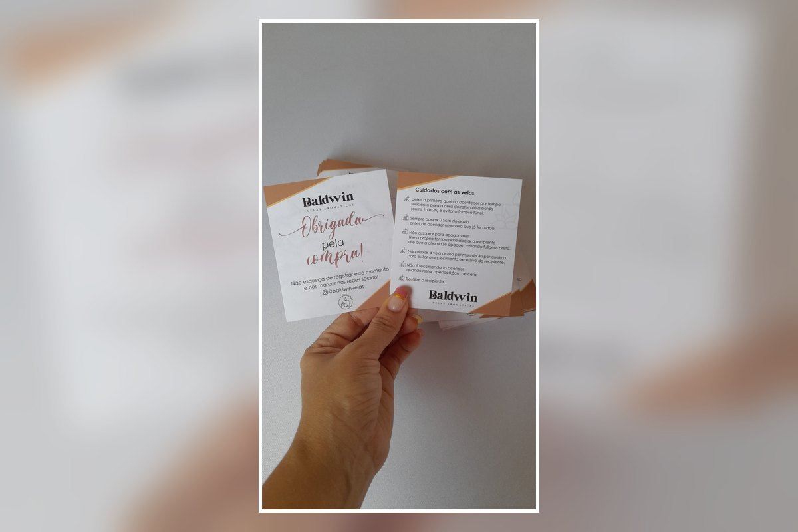

Mensagem personalizada
Inclua uma mensagem de recepção alinhada ao tom e à identidade da sua marca.
Receba seus clientes com uma apresentação mais organizada e profissional. O cartão de boas-vindas pode reunir mensagem de recepção, orientações, contatos, redes sociais, informações de atendimento e outros dados importantes da sua marca.

O cartão de boas-vindas ajuda a apresentar sua marca e orientar o cliente desde o primeiro contato. O conteúdo pode ser adaptado ao seu tipo de negócio e à experiência que você deseja oferecer.
Inclua uma mensagem de recepção alinhada ao tom e à identidade da sua marca.
Adicione orientações, horários, contatos, redes sociais, cuidados, próximos passos ou outras informações relevantes.
Ideal para consultórios, clínicas, lojas, salões, serviços, hospedagens, presentes e atendimento personalizado.
Envie sua arte, referência ou as informações que deseja colocar no cartão pelo WhatsApp. Confirmamos formato, material, quantidade, prazo e valor antes da produção.
Envie sua referência e solicite um orçamento personalizado.